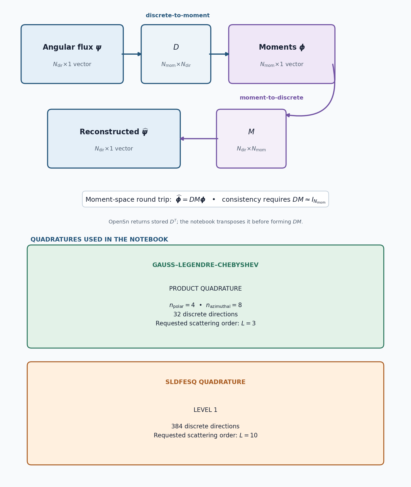

5.1.1. Angular Operator Construction Methods

In discrete-ordinates transport, we need operators to map between the angular flux (defined at discrete directions) and flux moments (expanded in spherical harmonics). The two key operators are:
Discrete-to-Moment (:math:`D`): computes flux moments from the angular flux.
Moment-to-Discrete (:math:`M`): reconstructs the angular flux from flux moments.
OpenSn provides various methods for constructing these operators:
standardgalerkin_onegalerkin_three
This tutorial demonstrates each method with a 3D Gauss–Legendre–Chebyshev product quadrature, then repeats the diagnostic with an SLDFESQ quadrature to show when operator construction has a visible effect.
[ ]:
import numpy as np
from mpi4py import MPI
from pyopensn.aquad import GLCProductQuadrature3DXYZ, SLDFEsqQuadrature3DXYZ
from pyopensn.context import Finalize
5.1.1.1. Helper function
We define a helper function to evaluate the orthogonality of the \(D\) and \(M\) operators. Ideally, the product \(D \cdot M\) should equal the identity matrix, which means the operators are consistent inverses of each other. For cases where \(N_{mom} \leq N_{dir}\), \(D\) will be the left inverse of \(M\).
OpenSn stores the discrete-to-moment operator in direction-by-moment order, which is \(D^T\) relative to the literature form used here. The transpose below converts the stored array to \(D\) before forming \(D \cdot M\).
[ ]:
def check_orthogonality(D_transpose, M, label):
"""Check how close the literature-form D @ M product is to identity."""
product = D_transpose.T @ M
diag = np.diag(product)
mask = np.ones(product.shape, dtype=bool)
np.fill_diagonal(mask, False)
max_off_diag = np.abs(product[mask]).max() if product[mask].size > 0 else 0.0
max_diag_dev = np.abs(diag - 1.0).max()
print(f"{label}:")
print(f" Stored D^T shape: {D_transpose.shape}, M shape: {M.shape}")
print(f" Max off-diagonal of D @ M: {max_off_diag:.6e}")
print(f" Max diagonal deviation from 1: {max_diag_dev:.6e}")
print()
return max_off_diag, max_diag_dev
5.1.1.2. Standard method
The Standard method builds the operators directly from the spherical harmonics evaluated at the quadrature points:
This is the default method and works with any quadrature set and any scattering order. However, for a finite quadrature, \(D \cdot M\) is not guaranteed to be the identity.
[ ]:
pquad_std = GLCProductQuadrature3DXYZ(
n_polar=4, n_azimuthal=8, scattering_order=3, operator_method='standard'
)
D_transpose_pquad_std = pquad_std.GetDiscreteToMomentOperator()
M_pquad_std = pquad_std.GetMomentToDiscreteOperator()
off_pquad_std, diag_pquad_std = check_orthogonality(
D_transpose_pquad_std, M_pquad_std, "Standard"
)
5.1.1.3. Galerkin One method
The Galerkin One method builds the \(M\) operator the same way as the Standard method, then computes \(D\) by directly inverting the \(M\) matrix. This requires the operator to be square, i.e., the number of directions must equal the number of moments.
When using galerkin_one, the scattering_order parameter is optional. If omitted, OpenSn automatically selects the scattering order so that the number of spherical harmonic moments equals the number of quadrature directions, yielding a square (and thus invertible) system.
This method produces operators that satisfy \(D \cdot M = \mathbf{I}\) to machine precision, as long as the square \(M\) operator is well-conditioned.
[ ]:
pquad_g1 = GLCProductQuadrature3DXYZ(
n_polar=4, n_azimuthal=8, operator_method='galerkin_one'
)
D_transpose_pquad_g1 = pquad_g1.GetDiscreteToMomentOperator()
M_pquad_g1 = pquad_g1.GetMomentToDiscreteOperator()
off_pquad_g1, diag_pquad_g1 = check_orthogonality(
D_transpose_pquad_g1, M_pquad_g1, "Galerkin One"
)
5.1.1.4. Galerkin Three method
The Galerkin Three method provides a middle ground. It orthogonalizes the spherical harmonics to form a set of approximate spherical harmonics that are orthogonal with respect to the given quadrature rule. Both \(D\) and \(M\) are built from these approximate, orthogonalized harmonics.
Unlike galerkin_one, this method does not require a square operator, so the requested scattering order does not have to match the number of directions. The quadrature still limits which harmonics can be selected. For the 3D product quadrature used here (four polar and eight azimuthal angles), the selection rules retain at most 32 moments, one per direction, and no harmonic above degree 7. Requesting a higher order omits the higher-degree harmonics without an error, and
GetScatteringOrder() still reports the requested order, so inspect GetMomentToHarmonicsIndexMap() to confirm which \((\ell, m)\) pairs were retained whenever you change the scattering order. The orthogonalized basis makes the composed moment-space operator \(D \cdot M\) equal to \(\mathbf{I}\) over the retained moments only, so this check cannot reveal harmonics that were not selected.
[ ]:
pquad_g3 = GLCProductQuadrature3DXYZ(
n_polar=4, n_azimuthal=8, scattering_order=3, operator_method='galerkin_three'
)
D_transpose_pquad_g3 = pquad_g3.GetDiscreteToMomentOperator()
M_pquad_g3 = pquad_g3.GetMomentToDiscreteOperator()
off_pquad_g3, diag_pquad_g3 = check_orthogonality(
D_transpose_pquad_g3, M_pquad_g3, "Galerkin Three"
)
5.1.1.5. Product-quadrature comparison
The table below compares \(D \cdot M\) for each method using a 3D product quadrature with four polar and eight azimuthal angles. This quadrature integrates the selected third-order moments accurately, so all three methods approach the identity to machine precision.
[ ]:
print(f"{'Method':<20} {'Max off-diagonal':>20} {'Max diag deviation':>20}")
print("-" * 62)
print(f"{'Standard':<20} {off_pquad_std:>20.6e} {diag_pquad_std:>20.6e}")
print(f"{'Galerkin One':<20} {off_pquad_g1:>20.6e} {diag_pquad_g1:>20.6e}")
print(f"{'Galerkin Three':<20} {off_pquad_g3:>20.6e} {diag_pquad_g3:>20.6e}")
pquad_results = {
"STANDARD": (off_pquad_std, diag_pquad_std),
"GALERKIN_ONE": (off_pquad_g1, diag_pquad_g1),
"GALERKIN_THREE": (off_pquad_g3, diag_pquad_g3),
}
for method, (off_diagonal, diagonal_deviation) in pquad_results.items():
print(f"PQUAD_{method}_MAX_OFF_DIAGONAL={off_diagonal:.12e}")
print(f"PQUAD_{method}_MAX_DIAG_DEVIATION={diagonal_deviation:.12e}")
assert all(max(result) < 1.0e-12 for result in pquad_results.values())
The product-quadrature calculation gives:
Method |
Maximum off-diagonal |
Maximum diagonal deviation |
|---|---|---|
Standard |
\(1.79\times10^{-15}\) |
\(8.88\times10^{-16}\) |
Galerkin One |
\(2.96\times10^{-15}\) |
\(1.44\times10^{-15}\) |
Galerkin Three |
\(2.88\times10^{-16}\) |
\(1.11\times10^{-15}\) |
All values are at floating-point roundoff and satisfy the \(10^{-12}\) regression threshold. Exact roundoff-level values can vary slightly by platform.
5.1.1.6. When operator choice matters: SLDFESQ
The product rule above integrates the selected third-order moments accurately, so all three constructions approach the identity. To expose the difference between the methods, we reuse the same diagnostic with a level-1 SLDFESQ quadrature. The standard and Galerkin Three cases request order 10 and retain 121 moments. Galerkin One instead selects 384 moments to match the 384 directions and form a square operator.
[ ]:
sldfesq_std = SLDFEsqQuadrature3DXYZ(
level=1, scattering_order=10, operator_method="standard"
)
sldfesq_g1 = SLDFEsqQuadrature3DXYZ(
level=1, operator_method="galerkin_one"
)
sldfesq_g3 = SLDFEsqQuadrature3DXYZ(
level=1, scattering_order=10, operator_method="galerkin_three"
)
off_sldfesq_std, diag_sldfesq_std = check_orthogonality(
sldfesq_std.GetDiscreteToMomentOperator(),
sldfesq_std.GetMomentToDiscreteOperator(),
"Standard",
)
off_sldfesq_g1, diag_sldfesq_g1 = check_orthogonality(
sldfesq_g1.GetDiscreteToMomentOperator(),
sldfesq_g1.GetMomentToDiscreteOperator(),
"Galerkin One",
)
off_sldfesq_g3, diag_sldfesq_g3 = check_orthogonality(
sldfesq_g3.GetDiscreteToMomentOperator(),
sldfesq_g3.GetMomentToDiscreteOperator(),
"Galerkin Three",
)
5.1.1.7. SLDFESQ comparison
Here the standard weighted projection departs appreciably from the identity. Both Galerkin constructions produce consistent moment-space mappings: Galerkin One uses a square 384-moment space, while Galerkin Three orthogonalizes the requested 121-moment space. This contrast shows why operator choice should be checked against both the quadrature and the retained moment order.
[ ]:
print(f"{'Method':<20} {'Max off-diagonal':>20} {'Max diag deviation':>20}")
print("-" * 62)
print(f"{'Standard':<20} {off_sldfesq_std:>20.6e} {diag_sldfesq_std:>20.6e}")
print(f"{'Galerkin One':<20} {off_sldfesq_g1:>20.6e} {diag_sldfesq_g1:>20.6e}")
print(f"{'Galerkin Three':<20} {off_sldfesq_g3:>20.6e} {diag_sldfesq_g3:>20.6e}")
sldfesq_results = {
"STANDARD": (off_sldfesq_std, diag_sldfesq_std),
"GALERKIN_ONE": (off_sldfesq_g1, diag_sldfesq_g1),
"GALERKIN_THREE": (off_sldfesq_g3, diag_sldfesq_g3),
}
for method, (off_diagonal, diagonal_deviation) in sldfesq_results.items():
print(f"SLDFESQ_{method}_MAX_OFF_DIAGONAL={off_diagonal:.12e}")
print(f"SLDFESQ_{method}_MAX_DIAG_DEVIATION={diagonal_deviation:.12e}")
assert min(sldfesq_results["STANDARD"]) > 0.1
assert max(sldfesq_results["GALERKIN_ONE"]) < 1.0e-9
assert max(sldfesq_results["GALERKIN_THREE"]) < 1.0e-12
The SLDFESQ calculation gives:
Method |
Maximum off-diagonal |
Maximum diagonal deviation |
|---|---|---|
Standard |
\(5.216\times10^{-1}\) |
\(3.048\times10^{-1}\) |
Galerkin One |
\(1.18\times10^{-11}\) |
\(3.12\times10^{-12}\) |
Galerkin Three |
\(7.22\times10^{-16}\) |
\(3.33\times10^{-15}\) |
The standard construction has a visible departure from the identity. Galerkin One reduces both errors below \(10^{-9}\), while Galerkin Three reaches floating-point roundoff for the retained 121-moment space.
5.1.1.8. Finalize (for Jupyter Notebook only)
In Python script mode, PyOpenSn automatically handles environment termination. However, this automatic finalization does not occur when running in a Jupyter notebook, so explicit finalization of the environment at the end of the notebook is required. Do not call the finalization in Python script mode, or in console mode.
Note that PyOpenSn’s finalization must be called before MPI’s finalization.
[ ]:
if "opensn_console" not in globals():
from IPython import get_ipython
if get_ipython() is not None:
Finalize()
MPI.Finalize()